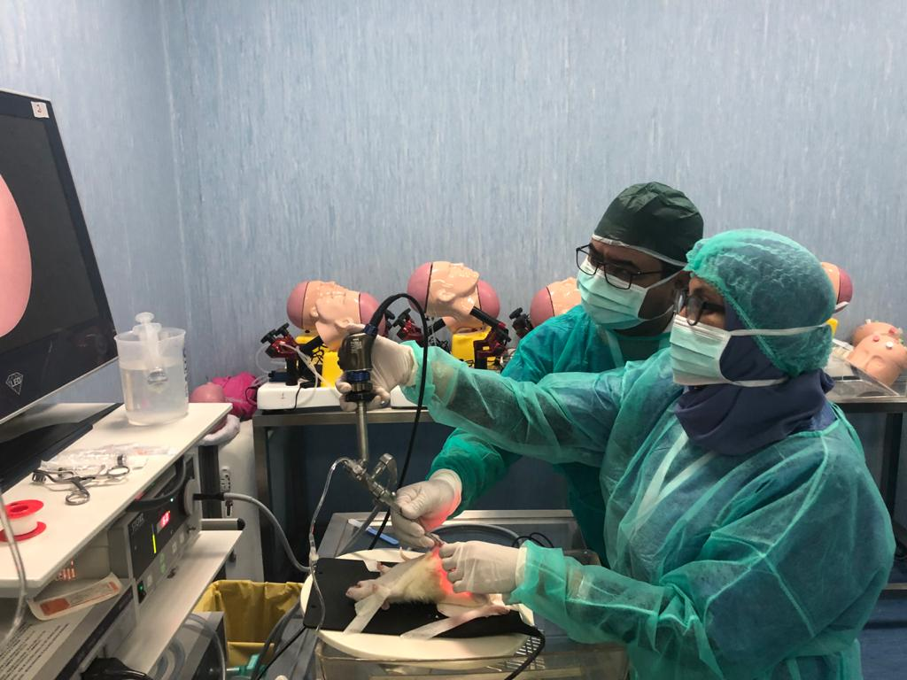
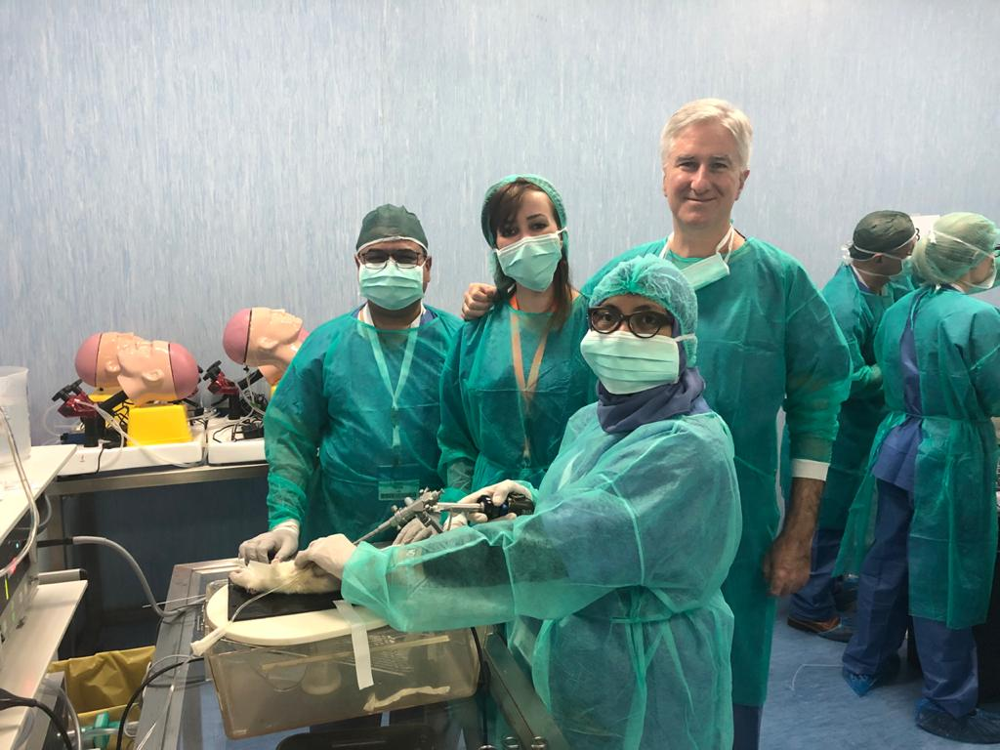

Director and Head- Neurosurgery and Neuro-interventional Surgery, Max Super Specialty Hospital, Shalimar Bagh


About Doctor
- Doctore: Vikas Gupta
- Contact No.: +919968661522
- Email: drvgns@gmail.com
Dr. Vikas Gupta
With a career spanning 35 years, Dr. Vikas Gupta has become a reliable and renowned specialist in Spine and Neuro Surgery in Delhi and NCR. Having served in various institutions, Dr. Gupta is currently Director and Head of Neurosurgeryat Max Super Specialty Hospital in Shalimar Bagh, New Delhi.
Besides being an MS in General Surgeryfrom G. B Pant Post Graduate Institute of Medical Education and Research &an M. Ch in Neurosurgery from Maulana Azad Medical College, New Delhi, Dr. Vikas Gupta has completed his FINR in Interventional Neurosurgery from the Institute of Neuro-Radiology, University Hospital, University of Zurich, Switzerland.
Read moreAreas of Expertise:
Talks & Publications:
Present
2018–2020
HOD & Consultant- Neurosurgery, Manipal Hospital Dwarka
2012–2018
HOD & Consultant- Neurosurgery- BLK Super specialty Hospital
2004–2012
• Consultant- Fortis Hospital, Noida
2002–2004
HOD & Consultant- Neurosurgery- EHIRC, Faridabad
1993–2002
Trained & Former Faculty Member of GB Pant Hospital & MAMC, Delhi